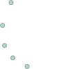
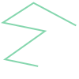

Annotators#
import cartopy.crs as ccrs
import geoviews as gv
from geoviews import annotate
gv.extension('bokeh')
![]()
![]()
This notebook documents the usage and design of the annotate coordinator, which makes it easy to draw, edit, and annotate polygon, polyline, rectangle, and point data on top of a map or other plots. The annotate function builds on Bokeh Drawing Tools connected to HoloViews drawing-tools streams, providing convenient access to the drawn data from Python. For a detailed introduction to the annotate function, see the HoloViews Annotator user guide. This User Guide will focus on the additional functionality available for these annotators once GeoViews has been imported:
When used with GeoViews elements with a
crs, the editable table will display coordinates as latitude and longitude pairsAdditional checkpoint, restore, and clear-data tools are added
The
gv.Pathannotator makes a distinction between feature nodes (at the start and end of a path) and regular nodes
In this guide we will demonstrate the usage of these annotators on a map tile source to demonstrate how projections between Mercator and lat/lon coordinates are handled.
Annotating Points#
When annotating a GeoViews element it is assumed that the data is displayed in Web Mercator coordinates (as is the default when working with the Bokeh backend) but the coordinates may be supplied in any coordinate system. Regardless of which coordinates are provided, the table used to edit the coordinates for a GeoViews annotator will always display longitudes and latitudes, making it simpler to edit the coordinate values.
tiles = gv.tile_sources.OSM()
sample_points = dict(
Longitude = [-10131185, -10131943, -10131766, -10131032, -10129766],
Latitude = [ 3805587, 3803182, 3801073, 3799778, 3798878])
points = gv.Points(sample_points, crs=ccrs.GOOGLE_MERCATOR).opts(
size=10, line_color='black', responsive=True, min_height=600
)
point_annotate = annotate.instance()
annotated = point_annotate(points, annotations=['Size'])
annotate.compose(tiles, annotated)
WARNING:param.Row00519: sizing_mode='stretch_width' on Row is being overridden to 'stretch_both' by a child's sizing. Set pn.config.respect_explicit_sizing=True to prevent this.
The annotator will return coordinates in the coordinate system they were originally defined in on the .annotated property. The data of this element can be accessed either using the .dframe method (or .array or .columns):
point_annotate.annotated.dframe()
| Longitude | Latitude | Size | |
|---|---|---|---|
| 0 | -10131185 | 3805587 | |
| 1 | -10131943 | 3803182 | |
| 2 | -10131766 | 3801073 | |
| 3 | -10131032 | 3799778 | |
| 4 | -10129766 | 3798878 |
Alternatively the element can be converted to a shapely geometry:
point_annotate.annotated.geom(projection=ccrs.PlateCarree())

Annotating Rectangles#
The GeoViews RectangleAnnotator behaves much like the RectangleAnnotator in HoloViews, but also projects the coordinates in the table to be more human-readable. To draw a rectangle, select the RectangleAnnotator tool in the Bokeh toolbar, then double click on one corner and drag to the location of the opposite corner:
rectangles = gv.Rectangles([(0, 0, 10, 10)])
box_annotate = annotate.instance()
annotated = box_annotate(rectangles, annotations=['Label'], name='Rectangles')
annotate.compose(tiles, annotated)
WARNING:param.Row00768: sizing_mode='stretch_width' on Row is being overridden to 'stretch_both' by a child's sizing. Set pn.config.respect_explicit_sizing=True to prevent this.
Just like the Points the data can be accessed using the .annotated property:
box_annotate.annotated.dframe()
| lon0 | lat0 | lon1 | lat1 | Label | |
|---|---|---|---|---|---|
| 0 | 0 | 0 | 10 | 10 |
or as a shapely geometry:
box_annotate.annotated.geom()

Annotating Paths#
The annotator for gv.Path objects behaves slightly differently from the one for HoloViews hv.Path objects, providing support for specifying the sort of boundary conditions typical in certain types of Earth-science modeling. Specifically, when annotating a GeoViews Path, a distinction is made between feature nodes, which describe the start and end point of a multi-line geometry, and regular nodes, which make up the interior nodes of the geometry. Attaching a new path to a regular node will split the existing path, automatically promoting the regular node to a feature node.
sample_poly=dict(
Longitude = [-10114986, -10123906, -10130333, -10121522, -10129889, -10122959],
Latitude = [ 3806790, 3812413, 3807530, 3805407, 3798394, 3796693])
path = gv.Path([sample_poly], crs=ccrs.GOOGLE_MERCATOR).opts(
line_width=2, color='black', responsive=True
)
path_annotate = annotate.instance()
annotated = path_annotate(path, vertex_annotations=['Height'])
annotate.compose(tiles, annotated)
WARNING:param.Row01114: sizing_mode='stretch_width' on Row is being overridden to 'stretch_both' by a child's sizing. Set pn.config.respect_explicit_sizing=True to prevent this.
Each path on the annotated element can be selected using iloc or by using .split which will return a list of Path elements representing each geometry:
path_annotate.annotated.iloc[0].dframe()
| Longitude | Latitude | Height | |
|---|---|---|---|
| 0 | -10114986 | 3806790 | |
| 1 | -10123906 | 3812413 | |
| 2 | -10130333 | 3807530 | |
| 3 | -10121522 | 3805407 | |
| 4 | -10129889 | 3798394 | |
| 5 | -10122959 | 3796693 |
Path elements also support the geom method:
path_annotate.annotated.geom(projection=ccrs.PlateCarree())

Annotating Polygons#
The GeoViews Polygons annotator behaves much like the annotator in HoloViews but also projects the coordinates in the table to be more readable:
poly = gv.Polygons([sample_poly], crs=ccrs.GOOGLE_MERCATOR)
poly_annotate = annotate.instance()
annotated = poly_annotate(poly, annotations=['Value'], vertex_annotations=['Height'])
annotate.compose(tiles, annotated)
WARNING:param.Row01773: sizing_mode='stretch_width' on Row is being overridden to 'stretch_both' by a child's sizing. Set pn.config.respect_explicit_sizing=True to prevent this.
Accessing Polygons works the same as with Path elements:
poly_annotate.annotated.iloc[0].dframe()
| Longitude | Latitude | Value | Height | |
|---|---|---|---|---|
| 0 | -10114986 | 3806790 | ||
| 1 | -10123906 | 3812413 | ||
| 2 | -10130333 | 3807530 | ||
| 3 | -10121522 | 3805407 | ||
| 4 | -10129889 | 3798394 | ||
| 5 | -10122959 | 3796693 | ||
| 6 | -10114986 | 3806790 |
and can also be converted to shapely geometries:
poly_annotate.annotated.iloc[0].geom(projection=ccrs.PlateCarree())